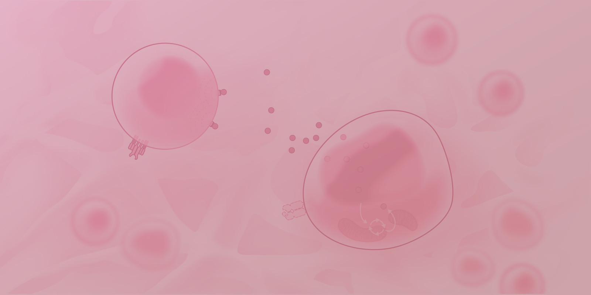
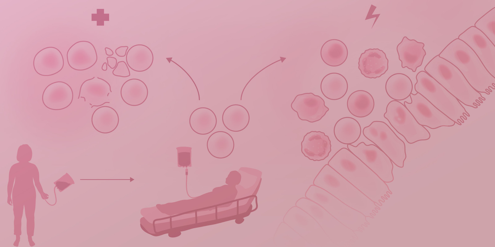
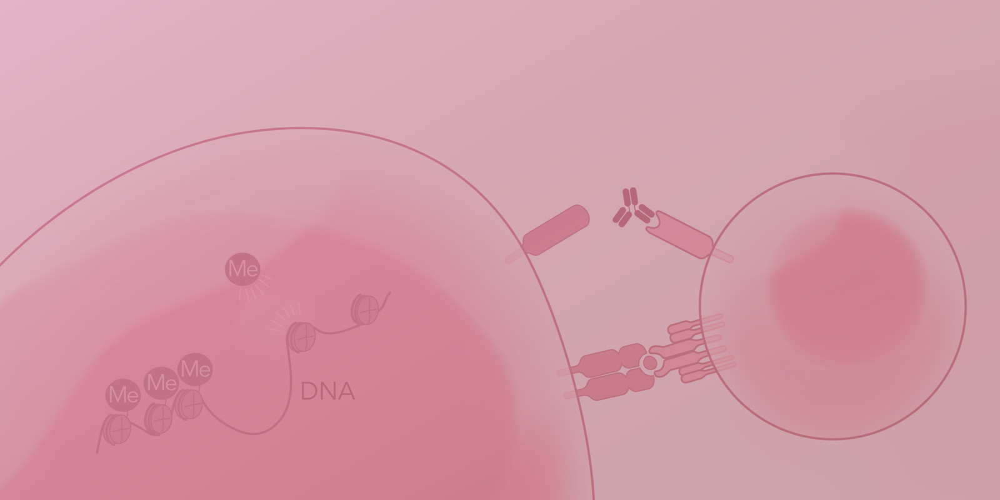
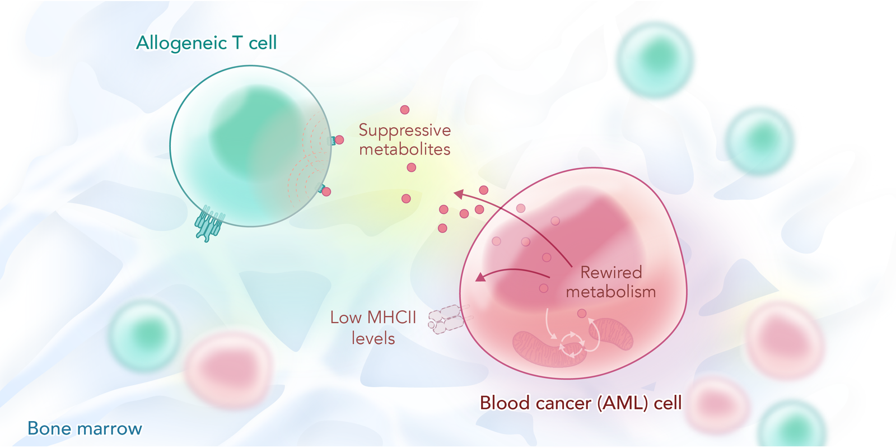
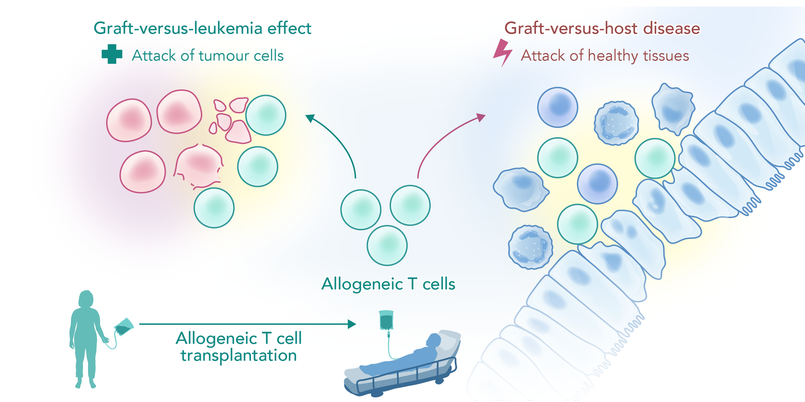
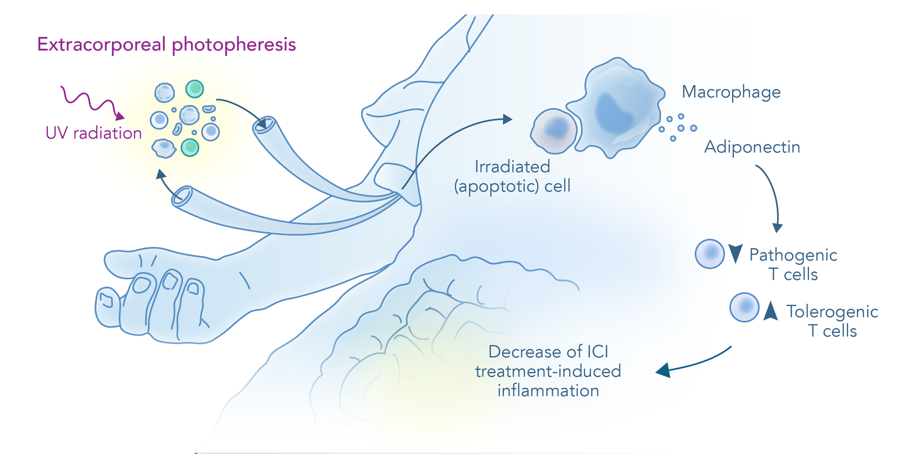
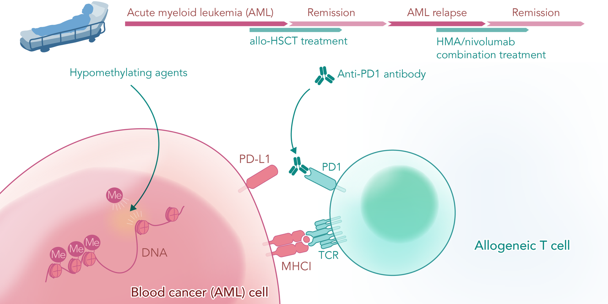

Leukemia • Cancer and Immune Cell Metabolism • Tumor Immunology • Allogeneic Hematopoietic Stem Cell Transplantation • Graft-versus-host disease • Immunotherapy

Cancer and immune cell metabolism
Graft-versus-host disease
Clinical trialsCancer and immune cell metabolism

Cellular metabolism is a central regulator of blood and immune cell function. Our lab’s main focus is understanding how metabolic processes in tumor and immune cells shape cancer progression and the anti-tumor immune response. In particular, we focus on acute myeloid leukemia (AML) as a model disease.
Our previous work studied how T cells rewire their metabolic programs upon the acquisition of effector functions (Edwards-Hicks and Apostolova et al. 2023). We discovered that effector CD8+ T cells synthesize a unique class of lipids, saturated phosphoinositides, which are essential to maintain proper effector function. These lipids were absent from naive or memory T cells, but had a critical role for the maintenance of the second messenger pool in rapidly proliferating effector CD8+ T cells.
The current work of our group focuses on metabolism in AML. AML is a highly aggressive blood cancer, characterized by the clonal expansion of poorly differentiated myeloid cells. Allogeneic hematopoietic stem cell transplantation (allo-HSCT) is the only available curative treatment option for most patients with AML. During an allo-HSCT, a graft from a foreign donor is transferred to the patient. The graft enables a reconstitution of a healthy hematopoietic system, but also contains immune cells that mount a powerful immunological attack against residual leukemic cells (graft-versus-leukemia effect, GVL). Unfortunately, 30-50% of allo-HSCT recipients develop an AML relapse, driven by diverse immune evasion mechanisms (Burk and Apostolova 2024). Our lab is exploring how metabolic processes regulate cell-intrinsic AML fitness and the tumor-immune cell crosstalk.
Graft-versus-host disease

Graft-versus-host disease (GVHD) is a frequent and severe complication of allogeneic hematopoietic stem cell transplantation (allo-HSCT). After allo-HSCT, donor immune cells, transferred with the graft, can attack healthy epithelial tissues, such as the gastrointestinal tract and the liver. While new immunosuppressive treatments have been approved in recent years, leading to better GVHD prevention and control, it still remains one of the key complications of allo-HSCT and a major cause of morbidity.
Our group has a long-standing research focus on the biology of GVHD. For instance, we described a physiological role of the ecto-5’-nucleotidase CD73 for dampening GVHD severity by generating adenosine which suppresses T cell responses (Tsukamoto and Apostolova et al. 2012). Furthermore, we found that bile acids regulate intestinal immune homeostasis during GVHD (Haring and Uhl et al. 2021). GVHD induction led to reduced bile acid abundance, while supplementation with tauroursodeoxycholic acid (TUDCA) was able to reverse intestinal cell death and preserve intestinal stem cells. In addition, we discovered a role for endoplasmic reticulum stress in the pathogenesis of GVHD (Haring et al. 2022). GVHD development was marked by elevated ER stress and inhibition of the downstream signaling molecule IRE1a reduced GVHD severity.
In our current work, we are exploring how metabolic immunomodulatory pathways orchestrate T cell activity during GVHD development.
Clinical trials

Extracorporeal photopheresis for immune checkpoint inhibitor-induced adverse events
Immune checkpoint inhibitor (ICI) treatment has improved the outcomes of many cancer patients. ICIs are antibodies which block negative regulators of T cell activity, leading to a more efficient anti-tumor immune response. However, ICI are frequently associated with immune-related adverse events (irAE), such as colitis and hepatitis.
Extracorporeal photopheresis (ECP) is a therapeutic procedure, in which the patient’s blood is collected in an extracorporeal device and the white blood cells are mixed with a photosensitizer, followed by exposure to UV light. This treatment has strong immunomodulatory effects, as evidenced by its frequent use in the treatment of graft-versus-host disease. Based on its activity in other forms of immune-mediated colitis, we hypothesized that ECP might be an efficient treatment for ICI-induced colitis. We first reported a single patient case, in which a patient with ICI-related colitis, who was treated long-term with several immunosuppressive drugs, was cured by ECP (Apostolova et al. 2020).
Encouraged by this impressive clinical response, we performed a phase 1b/2 clinical trial, in which n=14 patients with ICI-related colitis, hepatitis, and dermatitis, received ECP (Braun et al. 2025). The overall response rate at 12 weeks after start of ECP was 92%, with 100% of patients with colitis achieving complete remission. Furthermore, we leveraged several preclinical models of irAE to discover that ECP led to phagocytosis of apoptotic leukocytes by intestinal macrophages, followed by the release of the anti-inflammatory mediator adiponectin. Elevated adiponectin levels were also found in patients undergoing ECP.

Immune checkpoint inhibitors for patients with AML relapse after allo-HSCT
Allogeneic hematopoietic stem cell transplantation (allo-HSCT) is the only available curative treatment option for most patients with acute myeloid leukemia (AML). However, >30% of allo-HSCT recipients develop an AML relapse. New efficient treatment options for AML patients with relapse after allo-HSCT are urgently needed. We conducted a phase 1/2 clinical trial testing the efficacy of hypomethylating agents in combination with the anti-PD-1 antibody nivolumab in a cohort of n=16 heavily pretreated patient with post-allo-HSCT AML relapse (Apostolova, Kreutmair, Toffalori, Punta and Unger et al. 2023).
We observed complete remission in 12.5% (n=2/16) patients and partial remission in another 12.5% (n=2/16) patients, resulting in an overall response rate of 25%. Unfortunately, the responses of 3/4 patients were short-lived, indicating the aggressive nature of relapsed AML. In correlative single cell-based analyses, we found a higher frequency of activated, low senescence CD8+ effector T cells in responders.
Single-cell transcriptomics revealed a pro-inflammatory rewiring of the expression profile of T and myeloid cells in responders. Our study indicated that while individual patients might benefit from immune checkpoint inhibitor treatment, the overall efficiency remains modest, indicating an unmet clinical need.